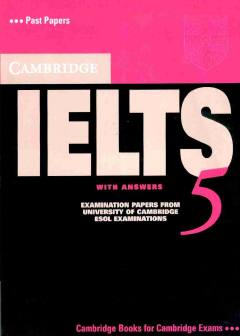

CIIELTS imtihoniga tayyorgarlik ko'rish uchun rasmiy amaliy testlar to'plami.
Ushbu kitob ingliz tilini chet tili sifatida o'rganuvchilar uchun mo'ljallangan bo'lib, IELTS imtihoniga tayyorgarlik ko'rish uchun rasmiy imtihon savollari va javoblarini o'z ichiga oladi. Nashrda to'rtta amaliy test va umumiy o'quv dasturi bo'yicha o'qish va yozish testlari taqdim etilgan.